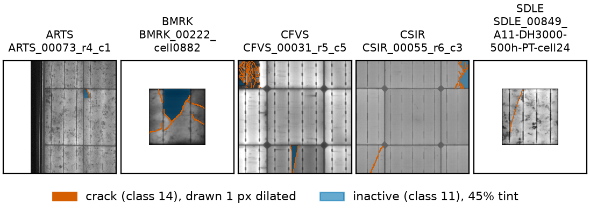

Each image: a window of about 3 x 3 cells, 512 x 512 px

The pool has no half-cut cells. E1 has 62.
BenchmarkEL release 2021 (Pratt et al. 2023), 24 classes
3
Existing work · reproduced
What papers report, what we got
Paper
Their number
Ours, same scoring
Gap came from
Pratt 2023 · DeepLabv3+
mean IoU 0.28
0.28 to 0.30
scoring rule (per-image median)
Fioresi 2022 · DeepLabv3
crack F1 0.81
0.81
none on crack
Jha 2025 · PV-S3 (SSL)
supervised 0.088
0.23, same recipe
under-trained baseline; background not scored
Hanifi 2025 · VGG-16 U-Net
crack 0.335
0.352
matches; model ranking does not
SEiPV-Net 2023
mIoU 0.86
0.84 or 0.46 to 0.51
how the class mean is taken
Every gap came from scoring, training budget or leakage.
22 EL papers read in full: 0 split train and test by module; 18 report one run, no interval.
Pratt, Fioresi, PV-S3: reproduced in our first pipeline, each on its own metric. Hanifi: their released code, 3 seeds. SEiPV-Net: our models re-scored.
4
Our work · semi-supervised (P13, P16)
SSL helps only when labels are scarce
Labels
Inactive IoU SSL minus supervised
Crack
5%
+0.117
relF1@2 +0.033
20%
+0.029
n.d.
50%
+0.006
n.d.
100%
+0.003
n.d.
5 vs 5 seeds. 5%: [+0.042, +0.189], with CutMix. 100%: with an external pool of 11,938 cells. n.d. = not detectable.
With all labels in use, the problems were the split, the metric and unseen modules.
A correct crack label, redrawn, scored against itself
Change
Strict IoU
relF1@2
moved 1 px
0.483
1.0
moved 2 px
0.249
1.0
thinned to 1 px centreline
0.465
1.0
redrawn 3 px wide
0.605
1.0
Same baseline predictions, scored on four label versions
Labels
Strict IoU
relF1@2
1 px centreline
0.233
0.824
2021 release
0.320
0.822
v1.1 (benchmark)
0.365
0.846
redrawn 3 px
0.414
0.849
relF1@2: crack F1 where a pixel counts if it lies within 2 px; 2 px = 95th percentile distance between two annotations of one crack Split: 24 physical modules crossed folds (91 cells); regrouped into 285 module groups, none crosses folds
gain counts if Δ ≥ M and 95% CI lower bound > 0
M = max(0.01, 2 × SE of baseline vs itself) = 0.010
guards: crack width 0.85 to 1.15 · false crack px ≤ 1.5x
other classes (mIoU) drop ≤ 0.010
Interval: bootstrap over module groups and seeds, 2,000 draws. 0 of 15 baseline-vs-itself splits would pass.
532 pool cells, out of fold; mean of 2 seeds (baseline 5); same training except Pratt's weighted loss. Bold = best. Inactive gaps under 0.05 are seed noise. mIoU-R13 = mean IoU over 13 classes.
11
Results · pool, 5 seeds, corrected split
Results II: five-seed rows
Change to the baseline
Crack relF1@2
Δ vs baseline [95% CI]
Strict crack IoU
Inactive IoU
mIoU-R13
Baseline (PF)
0.846
0.365
0.504
0.612
Plain fine-tune
0.852
+0.0059 [−0.0043, +0.0152]
0.383
0.514
0.607
HRNet-W18 encoder
0.857
+0.0104 [+0.0012, +0.0203]
0.366
0.514
0.614
SWAD
0.853
+0.0070 [−0.0007, +0.0156]
0.383
0.520
0.619
HRNet-W18 + SWAD
0.862
+0.0154 [+0.0065, +0.0260]
0.375
0.504
0.618
Baseline + D4 views
0.860
+0.0134 [+0.0066, +0.0207]
0.388
0.531
0.620
Final recipe *
0.868
+0.0222 [+0.0138, +0.0308]
0.394
0.537
0.623
Every change gains a little; the margin is 0.010.
532 pool cells, out of fold, mean of seeds 5 to 9. HRNet-W18 and HRNet-W18 + SWAD draw more false crack pixels on crack-free cells (up to 4.2x the baseline); D4 views cut them. * the SWAD readout was chosen on these cells; the fair test is E1.
Confirmed on unseen modules. A new layout needs some labelled cells.
Recipe averaged over 5 seeds; argmax; 101 of 106 cells from one source (CSIR). Few-shot: trained with labelled E1 cells of the other folds, out of fold, 3 seeds, a separate registered read.
13
Qualitative
Qualitative results
14
Analysis · pool screens
Where the gain comes from
HRNet-W18: more recall at the same precision
Weighted CE (Pratt): recall bought with precision; cracks drawn 3.05x too wide
Stride 8 (UCF-EL): loses both
2-seed screens, argmax, same training. Dashed: equal F1.
15
Conclusion
What we showed
1 Published EL scores do not compare; we built a benchmark that makes them compare
2 Resolution matters; the final recipe is confirmed better on unseen modules